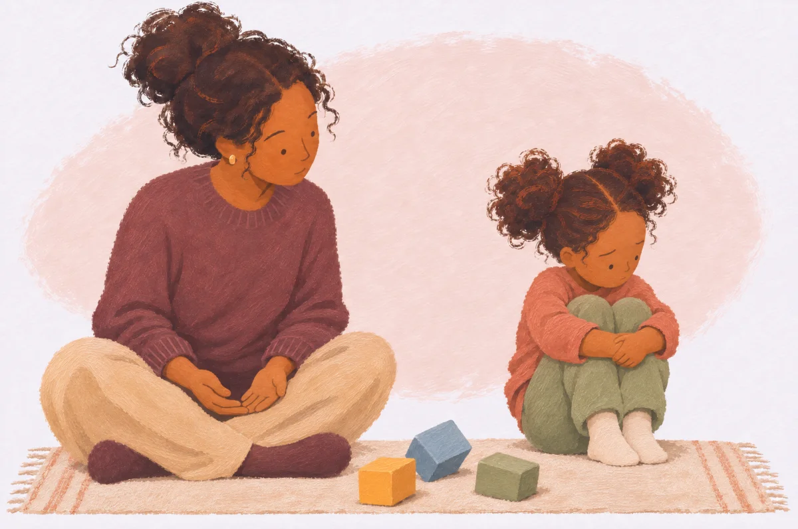
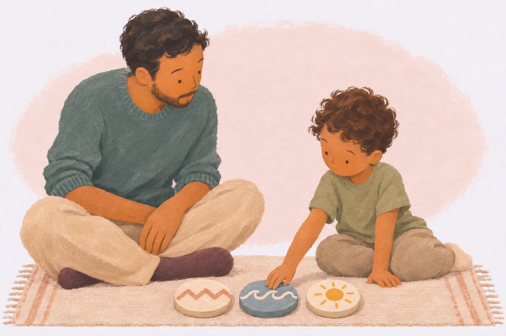

Explorar
Todos os cards do acervo. A marca mostra quais combinam com Lia hoje.
3 cards para “birra”. O app guarda esse assunto em Frustrações e emoções.


Demonstração: dados fictícios, conteúdo em revisão
Todos os cards do acervo. A marca mostra quais combinam com Lia hoje.
3 cards para “birra”. O app guarda esse assunto em Frustrações e emoções.

